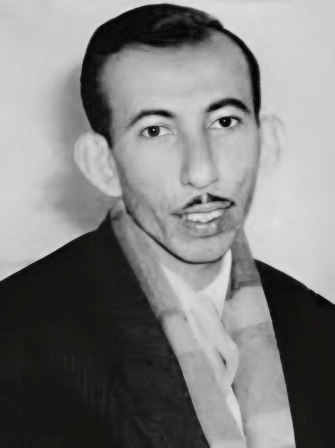

أنشودة المطر
عيناكِ غابتا نخيلٍ ساعةَ السحرْ
أو شُرفتان راح ينأى عنهما القمرْ
رحلة بين سطور الشعر العربي الحديث
بدر شاكر السياب (1926-1964) هو شاعر عراقي يُعد من أبرز رواد الشعر الحر في الأدب العربي الحديث. وُلد في قرية جيكور بمحافظة البصرة، وسط عائلة بسيطة، وكانت طفولته مليئة بالصعوبات والمعاناة بسبب وفاة والدته في سن مبكرة. وقد انعكست هذه المعاناة في أشعاره التي كانت مليئة بالآلام والأحلام. كما كانت لديه القدرة على المزج بين الشعر التقليدي والشعر الحر، مما جعله أحد مؤسسي هذا النوع من الشعر في الأدب العربي.
نشأ بدر في بيئة مليئة بالمعاناة والحزن، ولكنه كان يسعى دومًا لتحقيق التغيير من خلال شعره، حيث كان يحمل هموم وطنه وأمته في طيات قصائده. وقد تأثر في شعره بالأدب الغربي والألمانية والإنجليزية، الأمر الذي كان له أثر واضح في تحديث الشعر العربي.
بدأ بدر شاكر السياب دراسته الجامعية في جامعة بغداد، حيث درس الأدب العربي وتعرف على العديد من الأدباء والشعراء. وقد تأثر بالحركات الأدبية والفكرية في العراق، وكانت له علاقات وثيقة مع العديد من الأدباء المعروفين في ذلك الوقت.
على الرغم من النجاحات الأدبية التي حققها، عانى السياب من العديد من الأمراض التي أثرت على صحته بشكل كبير. وكان يعاني من الفقر والمرض طوال سنواته الأخيرة، ورغم ذلك، ظل يتمسك بحلمه في تحسين الشعر العربي.
توفي بدر شاكر السياب في 1964 عن عمر يناهز 38 عامًا، ولكن أشعاره لا تزال حية إلى اليوم، ويُعتبر من أبرز الشعراء الذين أحدثوا ثورة في الأدب العربي الحديث.
عيناكِ غابتا نخيلٍ ساعةَ السحرْ
أو شُرفتان راح ينأى عنهما القمرْ
إني لأعجبُ كيفَ يُمكنُ أنْ تخونْ
العينُ صاحبَها؟ ولكن للنُفوسِ سُجونْ
يا أمَّ غيلانَ! رُؤى عينيكِ تُغريني
عيناكِ بيتي وسريري وصحوني
أغني على الأبوابِ للأطلالِ
للصمتِ وللظلامِ وللأوجاعِ
يبقى بدر شاكر السياب رمزًا خالدًا في الأدب العربي، فهو لم يكن مجرد شاعر فحسب، بل كان مجددًا أحدث ثورة في شكل القصيدة العربية. إن شعره يعبر عن معاناة الإنسان وأحلامه، مما يجعله حاضرًا في ذاكرة الأدب العربي إلى الأبد.